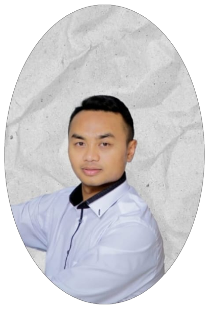

Dosen dan pengembang sistem akademik dengan pengalaman lebih dari 10 tahun di bidang pendidikan dan pembinaan santri. Berpengalaman dalam manajemen akademik serta mulai mengembangkan keahlian di bidang teknologi informasi, khususnya LMS, OJS, dan portal akademik. Aktif membina kegiatan ekstrakurikuler dan organisasi, dengan kemampuan kepemimpinan, pengajaran, serta pengembangan web yang terus ditingkatkan.
| Nama Lengkap | Ahmad Dimyati |
| Tempat, Tanggal Lahir | Bandung, 8 Januari 1991 |
| Agama | Islam |
| ahmaddimyati91@gmail.com | |
| Telepon | 082121486655 |
| Alamat | Baleendah, Bandung |
| Profesi | Dosen |
Berkontribusi dalam pengembangan pendidikan Islam dan nasional melalui integrasi kurikulum yang inovatif serta pemanfaatan teknologi digital. Fokus pada pembangunan sistem akademik, LMS, dan portal pembelajaran yang responsif dan inklusif, sekaligus memperkuat kualitas pengajaran, penelitian, dan pengabdian masyarakat di lingkungan STIT Al Ihsan Baleendah dan institusi mitra.